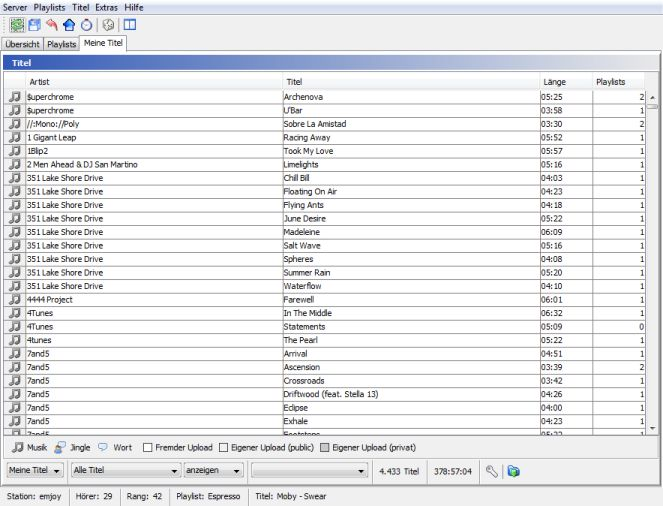
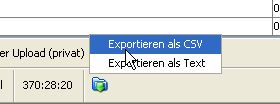

Wenn Du die Liste dauerhaft einschränken möchtest kannst Du Dir eine eigene Anssicht anlegen. Klicke dazu auf

Im -Tab siehst alle Titel
Standardmäßig werden Artist, Titel, Länge und Zahl der Playlists in denen der Titel vorkommt angezeigt. Wenn Du die Auswahl unten auf "Eigene Uploads" einschränkst siehst Du zusätzlich noch Album, Genre, Jahr und Uploaddatum. Diese Informationen sind für fremde Uploads jedoch nicht verfügbar.
Bei Titeln die in archivierten Playlists verwendet werden werden in der -Spalte neben der Gesamtzahl der Playlists in denen der Titel vorkommt auch die Zahl der Online-Playlists und Archiv-Playlists seperat angezeigt. "(2/1) 3" bedeutet z. B. der Titel kommt in zwei Online-Playlists und einer archivierten Playlist vor. Kommt ein Titel ausschließlich in archivierten Playlists vor wird ein Warndreieck angezeigt - dieser Titel könnte von laut.fm gelöscht werden wenn er von keiner anderen Station verwendet wird.
Du kannst Durch Klick auf die Kopfzeile einer Spalte die ganze Tabelle nach dieser Spalte sortieren. Ctrl-F öffnet einen Dialog in dem Du nach Titeln suchen kannst.
Du kannst die Auswahl auf verwendete bzw. nicht verwendete Titel einschränken. Wenn Du mit Titeltags arbeitest kannst Du ein Tag auswählen und alle Titel anzeigen (oder ausblenden) die mit diesem Tag versehen sind. Du kannst auch Titel anzeigen oder ausblenden die mit einem beliebigen Tag versehen sind.
Wenn Du die Liste dauerhaft einschränken möchtest kannst Du Dir eine eigene Anssicht anlegen. Klicke dazu auf  und gebe die Tags an die
ein- bzw. ausgeblendet werden sollen. In der ersten Auswahlliste kannst Du dann alternativ zu "Meine Titel" eine Deiner eigenen Ansichten auswählen.
und gebe die Tags an die
ein- bzw. ausgeblendet werden sollen. In der ersten Auswahlliste kannst Du dann alternativ zu "Meine Titel" eine Deiner eigenen Ansichten auswählen.
Du kannst die aktuelle Auswahl an Titeln als CSV- oder Textdatei exportieren in dem Du auf den  Exportieren-Button unten klickst, dann im Menü das gewünschte Format auswählst und schließlich im Dateidialog ein Zielverzeichnis und einen Dateinamen wählst.
Exportieren-Button unten klickst, dann im Menü das gewünschte Format auswählst und schließlich im Dateidialog ein Zielverzeichnis und einen Dateinamen wählst.
